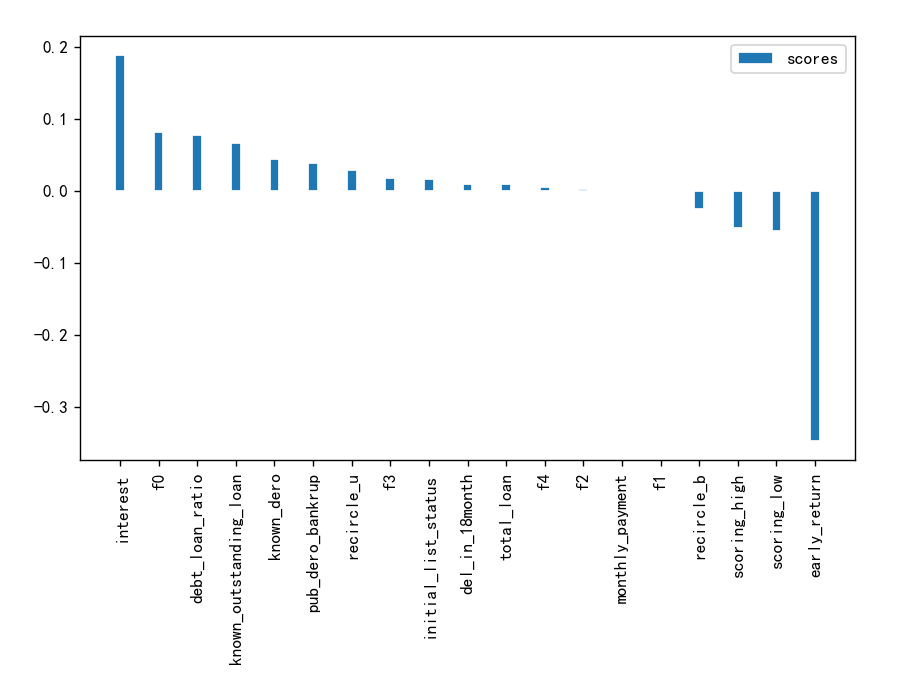
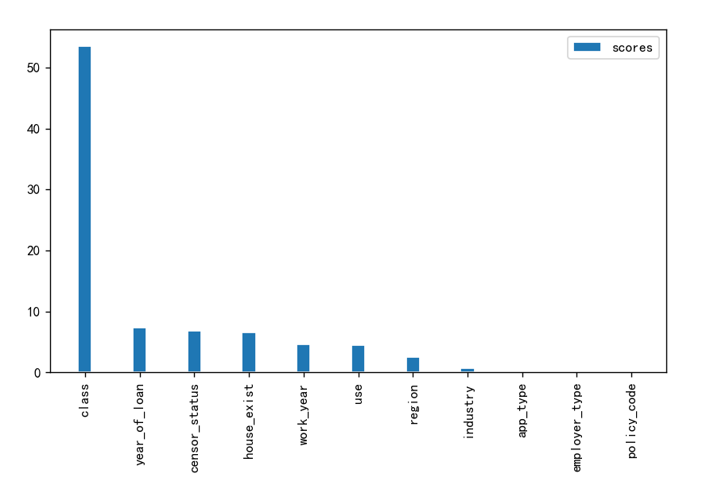
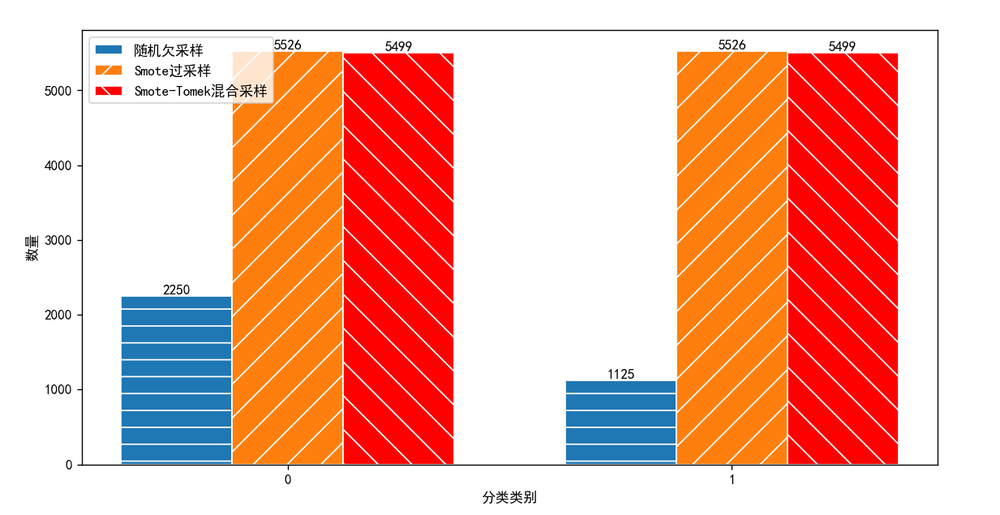

随着我国经济的高速发展，人们的消费需求也逐渐提高。在现实生活中总是会存在有些人自身的资金需求与自身经济能力不匹配，从而导致资金周转不开的问题。
为了解决这一问题，部分人会向一些商业银行借款进行周转资金，使得资金在市场继续流动
当资金链流动不畅，或再次出现资金链断裂情形，就很可能导致个人违约，若不能如期偿还贷款，这就带来了贷款违约的风险隐患
该系统的模型是基于2021年大数据竞赛-个贷违约预测赛题提供的数据训练而成的，可以为银行贷款业务的管理人员提供服务和决策参考，以防范真实个贷违约风险。
首先点击文件上传，将文件上传至服务器
其次点击原文件列表，可对原文件进行数据处理
接着点击已处理文件列表，可对文件进行预测，提供四种预测方式
最后点击结果文件列表，可对结果文件进行查看和下载
可以点击模型对比更清晰了解各个模型之间的差异
计算相关系数和卡方检验对应p值，得到如下数据
 根据相关性原理，选出十七个特征用于模型训练
采用随机欠采样、Smote采样、Smote-Tomek混合采样
三种算法在三种采样方式得到的训练数据下选出各个算法的最优模型
具体细节可在模型对比中查看